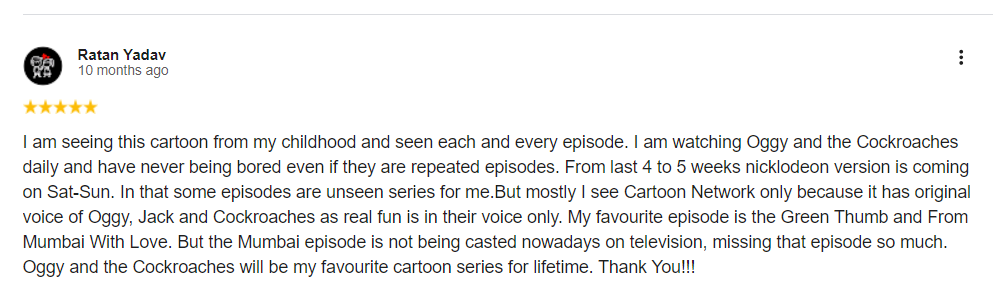

Introduction
Oggy and the Cockroaches", the cockroaches are mischievous and troublemaking characters who constantly create chaos in the life of the show's main character, Oggy, a lazy blue cat. The cockroaches play the role of pulling pranks and ruining Oggy's peaceful, everyday routines.
Main Characters
Oggy

Oggy is the main character of the popular French animated series "Oggy and the Cockroaches". He is a blue, easygoing, and somewhat lazy cat who enjoys spending his time relaxing, watching TV, and living a peaceful life. However, his calm world is constantly disrupted by three pesky cockroaches—Joey, Dee Dee, and Marky—who love to cause chaos in his home. To learn more Visit Here
Marky
Marky is one of the three mischievous cockroaches in the animated series "Oggy and the Cockroaches". He is the tallest and greenest of the trio, known for his laid-back demeanor and relaxed attitude. Unlike Joey, who is the mastermind, and Dee Dee, who is always hungry, Marky remains calm and collected. Despite his more easygoing nature, he plays a crucial role in the cockroaches' schemes to annoy Oggy. To learn more Visit Here
Dee-Dee
Dee Dee is one of the main cockroach characters in the animated series "Oggy and the Cockroaches". He is known for his distinctive orange color and insatiable appetite. Dee Dee is the glutton of the trio, always driven by his constant hunger and desire to eat anything he can find. His character is characterized by his large size compared to the other cockroaches, and his often comedic, food-driven antics. To learn more Visit Here
Joey
Joey is one of the central cockroach characters in the animated series "Oggy and the Cockroaches". As the leader of the cockroach trio, Joey is known for his cunning and intelligence. He is purple and stands out with his sharp, clever schemes and strategies designed to outwit and create trouble for Oggy. Joey is often seen masterminding the group’s plans, using his quick thinking and resourcefulness to execute elaborate pranks and disruptions. To learn more Visit_Here
Characters Images
Popular Episodes
This video is the most popular.
This is the second most popular video
Reviews
- 
Fun-Facts
- Oggy keeps a collection of various yarn-based items and goes fishing as a regular hobby. He is the main arch-nemesis of the cockroaches, who he is easily annoyed by. He is also the current caretaker of Piya, seen as her uncle – he even met her when she was still a baby.
- The first name of each of the three cockroaches, Joey, Dee-Dee and Marky, refers to three of the members of the punk rock group called the Ramones. Oggy, for his part, owes his first name to the famous singer Iggy Pop as well as the character of Ziggy Stardust created by David Bowie.